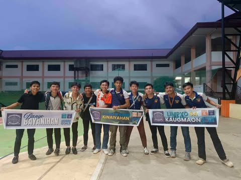
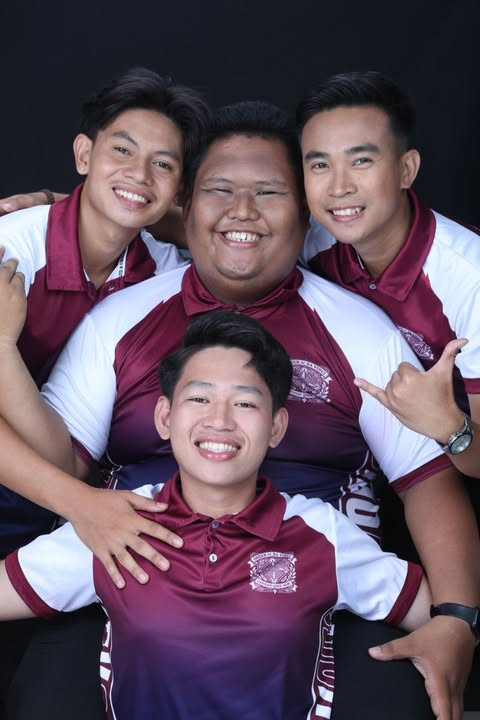

What is the Order of Da Vinci?
The Order of Da Vinci (ODV) is an exclusive men organization dedicated to developing visionary leaders who embody the core values of leadership, honor, valor, and service. Inspired by the legacy of Leonardo da Vinci, the organization seeks to cultivate individuals who are not only intellectually driven but also committed to personal growth and positive societal impact.
Through various programs, training, and collaborative initiatives, ODV empowers its members—primarily college men—with the skills, knowledge, and resilience needed to face life's challenges and contribute meaningfully to their communities.
The Order of Da Vinci emphasizes the pursuit of excellence in art, science, and leadership, fostering a sense of unity and shared purpose among its members.
It aims to leave a lasting legacy by inspiring individuals to make significant contributions in their respective fields, always guided by the values of curiosity, integrity, and courage.
Our History
The 𝙊𝙧𝙙𝙚𝙧 𝙤𝙛 𝘿𝙖 𝙑𝙞𝙣𝙘𝙞 (𝙊𝘿𝙑) was founded in 2024 by Mr. Louie Jay Torralba Estrella, together with the Founding Grand Masters, Mr. Christian Jay Barbadillo Gumapac, Mr. Ian Albert Secopito Dela Peña, and Mr. Emanuel Tambong Monte Jr., and the Founding Master, Mr. Fhiel Andrey Morales.They envisioned an exclusive brotherhood of men who embody the values of wisdom and knowledge, drawing inspiration from the intellectual legacy of Leonardo da Vinci, whose timeless contributions to art, science, and philosophy continue to influence the modern world. Established with the mission to empower the youth, serve communities, and protect the environment, the Order sought to cultivate unity, discipline, and service among its members.
The history of the Order began on September 18, 2024, when the first ODV Group Chat was created, marking the initial gathering of aspirants who shared the same goals of unity, growth, and transformation. On the same day, the ODV Orientation was conducted, laying the foundation for the organization’s culture of discipline and brotherhood. The following day, September 19, 2024, the first ODV Session was officially held, where founding members committed themselves to uphold the principles of the Order. From September 2024 to January 2025, sixteen young men aspired to become the founding members, undergoing rigorous training, seminars, sessions, and project implementations that prepared them for the challenges of true Da Vincians.
On January 19, 2025, the first induction ceremony of the Order of Da Vinci took place at Koon, Rosario, Agusan del Sur. Out of the original sixteen aspirants, nine exceptional individuals emerged as the first official members: Ramil Paciano Atog, Christian Jay Pitos Eupeña, Regie Nudque Tandoc, Aian James Gohitia Perez, Jay-ar Bactalan Torralba, Jhon Mark Segovia Pacional, Jumarie Ramos Pastor, Laurence Menendez Villaluna, and Julianne Tristan Encarnacion Dequiña.
Following the induction, Mr. Ramil Paciano Atog was elected as the first President of the Order, symbolizing a new chapter in the organization’s history rooted in leadership, service, and excellence. Under his leadership, the Order achieved significant milestones in its early years. On January 24, 2025, the organization received its Certificate of Accreditation as a recognized student organization at the Agusan del Sur State College of Agriculture and Technology (ASSCAT).
Shortly after, on March 20, 2025, the Order launched The Radiance, its official publication, with the release of its first volume to showcase its vision and activities. Another historic achievement came on May 5, 2025, when the National Youth Commission (NYC) approved the organization’s registration under the Youth Organization Registration Program (YORP), solidifying its recognition as a legitimate youth organization. With its foundation firmly established, the Order opened its doors to a second batch of aspirants. On January 23, 2025, thirteen young men accepted the challenge of becoming Da Vincians during the General Orientation.
After undergoing developmental training and activities, eight outstanding individuals, together with Prince A. Jimenez from the first batch, were formally inducted as members on May 31, 2025, at CN Inland Resort, Rosario, Agusan del Sur. These new members were Charles Benedict C. Dator, Cyrill Jade B. Batobalani, Grayster Keith R. Ibarra, Zenmar M. Borres, Zieff Aaron H. Encluna, Jemar G. Morgado, Reyzlie Dominic D. Arnaldo, and John Dave C. Cadiong.
Today, the Order of Da Vinci continues to thrive under the unwavering commitment of its Grand Masters, officers, and members. Guided by its mission to empower the youth, serve communities, and protect the environment, the organization upholds the values of wisdom, brotherhood, and discipline while advocating for the United Nations’ 17 Sustainable Development Goals (SDGs). From its humble beginnings in 2024 to its recognized presence in 2025, the Order remains steadfast in its vision of shaping men of character, knowledge, and service, leaving a lasting impact on local, national, and international communities.